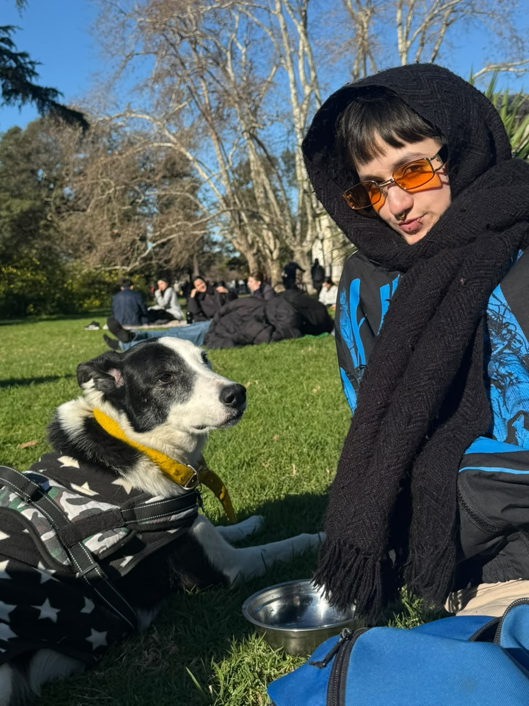
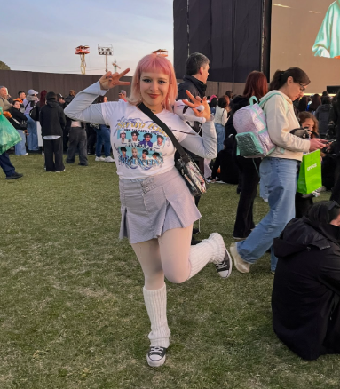
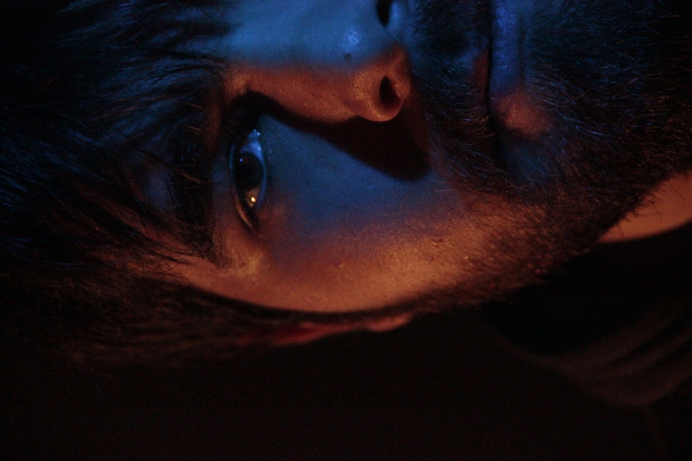

¡Hola! Somos Fran, Indi y Jaz, estudiantes de Artes Multimediales de la UNA (Universidad Nacional de las Artes). Actualmente estamos cursando la materia Informática General, y por eso estamos desarrollando esta página web. Nos queremos presentar y contarles un poco sobre nosotros:
Indi
Soy Indi, tengo 24 años y soy de San Cristóbal, CABA. Estudio Artes Multimediales desde el 2025 y me gusta aprender nuevas técnicas artísticas para mantenerme en movimiento. Me gusta hacer arte tejido, principalmente a crochet, y con eso armo diferentes mundos de fantasía. En mis tiempos libres me gusta ir con mi perro a la plaza y leer.

Jaz
Me llamo Jazmín, tengo 23 años y soy de Berazategui. Desde siempre me gusto el arte y diseñar más por el lado de la indumentaria pero hoy en día estoy con arte multimedial que también me encanta! Aunque mi fuerte y lo que me apasiona es lo textil por eso siempre trato de juntar ambas cosas. Hoy en día trabajo como sonidista asi que también descubrí que me gusta todo ese mundillo en conjunto con el de los instrumentos.

Fran
Hola, mi nombre es Francisco, también me dicen Frank. Tengo 22 años, soy de Floresta y estudio Artes Multimediales. Mi relación con el arte comenzó desde pequeño con la música y a lo largo del tiempo fue variando de ámbito hasta terminar en multimedia, que engloba varias ramas. En lo laboral me interesa todo lo que es sonido y grabación en vivo. En mis tiempos libres me gusta investigar nuevas ideas y descubrir nuevos instrumentos.
